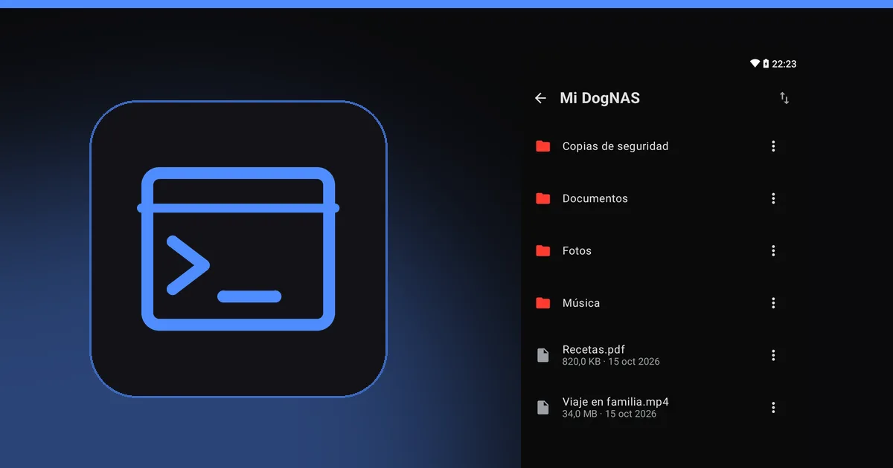
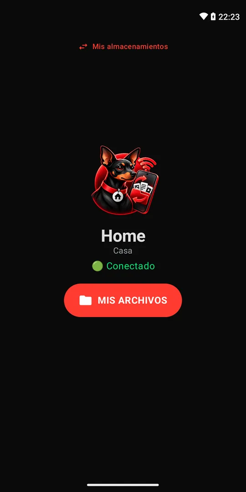

Cómo acceder a DogNAS con FileZilla, WinSCP, Cyberduck y rclone

DogNAS habla SFTP, así que cualquier programa que entienda ese protocolo puede acceder a los archivos de tu servidor. Esta guía muestra cómo conectar cuatro de los más usados y te ayuda a elegir. Si todavía no sabes qué es SFTP, empieza por qué es SFTP.
Antes de nada: los datos de conexión
En cualquier programa necesitarás el mismo conjunto de datos: dirección del servidor (host), puerto, usuario y contraseña. El servidor DogNAS los muestra en la pantalla "Cómo conectar tu PC o iPhone". La computadora debe estar en la misma red Wi-Fi que el servidor, y el servidor debe estar encendido.
En la primera conexión, el programa muestra la huella digital (fingerprint) de la clave del servidor y te pide que confíes en ella. Acepta cuando el dispositivo sea tuyo. Si después cambia sin motivo, desconfía.
FileZilla (Windows, Mac y Linux)
El más conocido, y funciona en los tres sistemas.
- Abre el Gestor de Sitios y crea un sitio nuevo.
- En Protocolo, elige SFTP.
- Completa host, puerto, usuario y contraseña con los datos del servidor.
- Conecta y arrastra archivos entre el lado de la computadora y el del servidor.
WinSCP (Windows)
Tiene una interfaz parecida al Explorador de archivos y es bueno si solo usas Windows.
- En la pantalla de inicio de sesión, elige SFTP como protocolo de archivo.
- Completa nombre de host, puerto, usuario y contraseña.
- Guarda la sesión y conecta.
Cyberduck (Windows y Mac)
Simple y visual, popular entre quienes usan Mac.
- Haz clic en Abrir conexión y elige SFTP en la lista.
- Completa servidor, puerto, usuario y contraseña.
- Conecta y navega por las carpetas como en un explorador de archivos.
rclone (línea de comandos)
Para quien le gusta la automatización y los scripts.
- Ejecuta
rclone config, crea un remoto nuevo y elige el tipo sftp. - Indica host, puerto, usuario y contraseña.
- Usa comandos como
rclone lsyrclone copypara listar y copiar archivos entre la computadora y el servidor.
Cuál elegir
- Quieres lo más simple en Mac: Cyberduck.
- Usas Windows y quieres algo parecido al Explorador: WinSCP.
- Usas más de un sistema: FileZilla.
- Quieres automatizar copias: rclone.



Precauciones
- Contraseña y PIN. No compartas los datos de conexión. Puedes revocar la credencial de un dispositivo cuando quieras.
- No es una copia de seguridad. Copiar al servidor guarda los archivos en otro lugar, pero DogNAS no hace copias por sí solo. Mantén una copia independiente de lo importante.
- En el celular, usa DogNAS Client Lite, con código QR y PIN, en lugar de un cliente SFTP genérico.
Para armar el servidor, mira cómo convertir un Android viejo en un servidor de archivos.